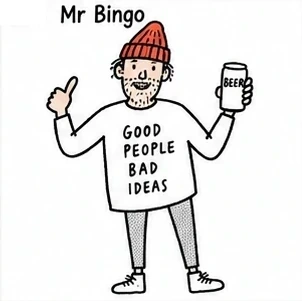
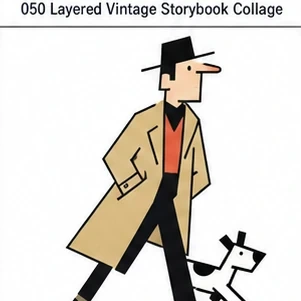
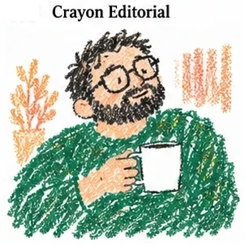

handraw-style
编号手绘图库：按编号选择手绘风格，用于手绘图、漫画和海报。
下载技能（ZIP，155.6 KB）编号手绘图库：按编号选择手绘风格，用于手绘图、漫画和海报。
下载技能（ZIP，155.6 KB）结构化提示词库：按风格库将出图需求整理为结构化提示词。
下载技能（ZIP，11.5 KB）社媒图文卡片排版：使用授权图源制作社媒图文卡片。
下载技能（ZIP，118.5 KB）材质概念插画：为对外成品制作表现材质质感的概念插画。
下载技能（ZIP，18.7 KB）分屏摄影海报：以分屏摄影构图制作竖版海报，可用于对外成品。
下载技能（ZIP，6.0 KB）大留白极简纸刊：以大面积留白制作极简纸质刊物风格海报。
下载技能（ZIP，16.6 KB）技能包附有各自的来源与许可。handraw-style 由 yang0 提供。





handraw-style 原样例图与画风库由 yang0 提供。FB-028 参考其媒介与笔触，角色按项目设计；FI-022 属于摄影风格。